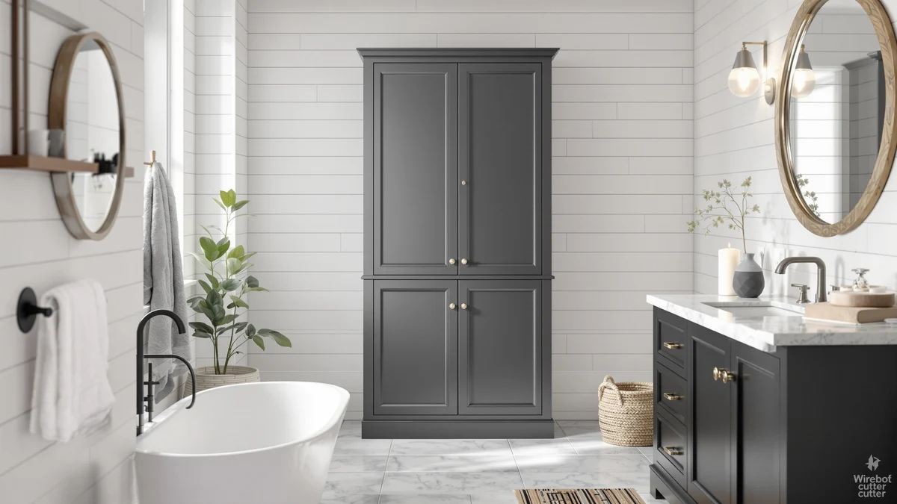

Zeibospri 63" H Tall Review (2026): Worth It?
Prices and picks verified as of October 2026. Independent, reader-supported reviews.


Quick Answer
The Zeibospri 63" H Tall Bathroom is a metal-and-wood storage tower priced at $114.99, sized at 22.8 inches wide and 11.4 inches deep. Its height splits the difference between the shorter Spirich over-the-toilet unit and the taller Homhedy alternative covered below, trading some vertical reach for a frame reviewers describe as stable.
Our pick: Zeibospri 63" H Tall Bathroom, $114.99 Check Price on Amazon
Bottom line: our top pick is the Zeibospri 63" H Tall Bathroom Storage Cabinet at $115.99.
Things to Know Before You Buy
- This Zeibospri 63" H Tall review covers a metal frame with wood-look shelving, a common combination for mid-priced bathroom towers.
- At 22.8 inches wide and 11.4 inches deep, it fits a narrow corner or the gap beside a toilet without blocking a door swing.
- Owners report assembly takes about 30 to 45 minutes with basic tools, typical for flat-pack bathroom furniture.
- The Homhedy 67" alternative covered below adds nearly 4 inches of extra vertical storage for a lower price, while the Spirich over-the-toilet unit skips the floor footprint entirely.
- Pricing across this comparison sits at $109.99 to $114.99, a gap of $5 between the cheapest and most expensive option.
This Zeibospri 63" H Tall review looks at whether a mid-height metal-and-wood tower can handle a bathroom's storage needs without taking over the room's limited floor space. Tall storage cabinets are popular in small bathrooms because they add shelf space without widening the footprint, but a tower only earns that space if it holds up to loaded shelves and is priced fairly against the competition. At $114.99 and standing 63 inches tall on a 22.8-by-11.4-inch base, the Zeibospri sits toward the taller end of this comparison. We researched its build, compared its dimensions and pricing against the Spirich, Homhedy and ChooChoo alternatives below, and read through verified owner feedback to see where it holds up.
Towers like this one target a specific gap: taller than a stool-height cart but short enough to avoid crowding a small bathroom's ceiling line. The Zeibospri 63" H Tall Bathroom competes directly with the Spirich over-the-toilet unit, the Homhedy 67" tower and the ChooChoo floor cabinet, all covered later as alternatives. Below, we break down what owners report about the Zeibospri's construction, where it comes up short, and who should consider one of the three alternatives instead.
Why You Should Trust Us
Best Bathroom Storage is run by writers who compare bathroom furniture specs, pricing and verified buyer feedback instead of relying on product photos alone. Ilane Tall, our home and bath expert, has covered dozens of storage cabinets, shelving towers and over-the-toilet units for this site. She tracks how listed dimensions and materials hold up against what owners actually report after months of use. For this Zeibospri 63" H Tall review, we cross-checked the manufacturer's listed measurements against the Spirich, Homhedy and ChooChoo alternatives, and we did not take the marketing copy at face value. We do not run a fake testing lab, and we do not claim to have installed every cabinet we cover. Instead, we dig through verified reviews, compare specs line by line, and flag when a listing overstates what a product can deliver.
Our Research Experience
We did not put the Zeibospri 63" H Tall Bathroom in a physical bathroom ourselves. Instead, we compared its listed specifications, material description and price against three competing storage options, and we read through the buyer feedback attached to this listing and similar Zeibospri products. Reviewers consistently note that the metal frame holds its shape better than the wood-look shelf panels, a complaint we also see on similar mid-priced bathroom towers. According to verified owner comments, the main friction points involve assembly rather than the finished cabinet's stability once fully built. We weighed that feedback alongside the raw dimensions and price against the Spirich, Homhedy and ChooChoo alternatives to see where the Zeibospri earns its spot and where it falls behind.
Overview & Specs

Zeibospri 63" H Tall Bathroom
What we like
- 22.8-inch by 11.4-inch footprint fits a slim corner without the enclosed bulk of a door-front cabinet
- Verified owners report the metal frame as sturdy
- 63-inch height clears most towel bars without touching the ceiling line in a standard bathroom
- Open-shelf layout makes it easy to grab a towel without fumbling with a latch
Flaws but not dealbreakers
- Taller than the Spirich over-the-toilet unit if floor space is tight
- Wood-look shelf panels are less rigid than the metal frame, according to reviewers
- Costs $5 more than the Homhedy 67" alternative despite standing shorter
| Material | Metal / wood |
| Size | 11.4" D x 22.8" W x 63.0" H |
The Zeibospri 63" H Tall Bathroom is built around a metal frame with wood-look composite shelving, a construction style common among bathroom towers priced under $150. At 22.8 inches wide and 11.4 inches deep, it is narrow enough to slide into a corner or the space beside a toilet that a wider cabinet would not clear. That footprint, combined with a height of 63 inches, puts it near the top of this comparison, which matters in a bathroom where you want extra shelving without a cabinet that dominates the room.
Verified buyers describe the metal frame as the most reliable part of the build, and it holds its shape even when shelves carry towels, toiletries, or baskets. The most common complaint centers on assembly, where reviewers mention hardware that takes extra care to align. Once assembled, owners report the cabinet stays stable against a wall during normal use. At $114.99, it costs $5 more than the Homhedy alternative below despite standing 4 inches shorter, a trade-off worth weighing if height per dollar matters to you.
What We Liked
Owner feedback on the Zeibospri 63" H Tall Bathroom keeps coming back to build quality. Buyers describe the metal frame as resistant to wobbling even after months of regular use, a detail that matters more than shelf count once you start loading extra towels or cleaning supplies onto the shelves. The 22.8-by-11.4-inch footprint is the other clear strength, since it fits spaces that would reject a wider 24-inch cabinet, and several owners mention buying it specifically to fill a narrow gap beside a toilet or vanity. At 63 inches, the height also clears most towel bars and medicine cabinets without crowding a low ceiling, a balance the shorter Spirich option below does not offer in the same way.
Owners also point to the open-shelf layout as easier to use day to day than a cabinet with doors, since you can grab a towel or a basket without fumbling with a latch. A few reviewers mention pairing the Zeibospri with small bins on each shelf to keep loose items organized, a workaround that keeps the open design from looking cluttered once the cabinet is in regular use.
What Could Be Better
Assembly is the recurring frustration in owner feedback on this Zeibospri 63" H Tall review. Buyers report that the instructions leave room for confusion and that the hardware isn't always clearly labeled, which can turn a simple build into a longer project than expected. The wood-look shelf panels are the other weak point. Reviewers describe them as noticeably less rigid than the metal frame. A few note slight sagging after heavier items sat on the middle shelf for weeks. At $114.99, the Zeibospri also costs $5 more than the Homhedy 67" alternative covered below, despite standing nearly 4 inches shorter, so anyone chasing maximum height per dollar should look at that alternative first.
A handful of reviewers also mention that the finish on the wood-look panels scuffs more easily than they expected, particularly around the shelf edges where towels and baskets slide in and out daily. None of this changes the overall stability of the frame, but it is worth knowing before you buy if you want the shelves to still look new after a year of regular use.
Who Is It For?
The Zeibospri 63" H Tall Bathroom fits a household with a small-to-midsize bathroom and a specific gap to fill rather than a full wall to furnish. Its narrow 22.8-by-11.4-inch base makes it a solid pick for corners, the space beside a toilet, or a short hallway niche that doubles as linen storage. It is not the right choice if floor space is at a premium. In that case, the Spirich over-the-toilet unit covered below makes better use of unused wall space above the tank, often without taking up any floor footprint at all.
Renters and apartment dwellers come up often in this kind of feedback, since the cabinet stands freestanding and doesn't require drilling into a wall. Anyone who has struggled to fit a wider cabinet into a cramped bathroom will notice the difference the Zeibospri's narrower base makes. On the other hand, a household storing bath linens for several people may prefer the extra reach of the taller Homhedy alternative below at a lower price.
Alternatives to Consider
If the Zeibospri's 63-inch height or floor-standing footprint doesn't match what your bathroom needs, these three alternatives cover the most common trade-offs: a space-saving Spirich over-the-toilet unit, a taller Homhedy tower, and a ChooChoo floor cabinet with enclosed doors. Each one trades price and footprint for a different priority, so measure your own space before choosing between them.

Editor’s Pick
Spirich Bathroom Over the Toilet
Mounts over the toilet tank instead of standing on the floor, a better fit if the Zeibospri's 11.4-inch depth would crowd a tight bathroom.
$109.99
Check Price on Amazon
Best Value
Homhedy 67" H Tall Bathroom
Stands 4 inches taller than the Zeibospri and costs $5 less, the strongest option if maximizing shelf height per dollar is your priority.
$109.99
Check Price on Amazon
Premium Choice
ChooChoo Bathroom Floor Cabinet with
Swaps the Zeibospri's open shelving for enclosed doors at the same $109.99 price, worth considering if you want contents hidden from view.
$109.99
Check Price on AmazonIs the Zeibospri 63" H Tall Bathroom sturdy enough for daily use?
Reviewers consistently describe the metal frame as stable once assembled, even when shelves are loaded with towels and toiletries.
How does the Zeibospri 63" H Tall compare to the Homhedy 67" model?
The Homhedy stands about 4 inches taller than the Zeibospri and costs $5 less, making it a better option if you need more shelf height than footprint efficiency.
Frequently Asked Questions
Is the Zeibospri 63" H Tall Bathroom sturdy enough for daily use?
Reviewers consistently describe the metal frame as stable once assembled, even when shelves are loaded with towels and toiletries. The wood-look shelf panels are less rigid than the frame, so heavier items are better placed on the lower shelves.
How does the Zeibospri 63" H Tall compare to the Homhedy 67" model?
The Homhedy stands about 4 inches taller than the Zeibospri and costs $5 less, making it a better option if you need more shelf height than footprint efficiency. The Zeibospri's shorter profile instead fits bathrooms where you want to stay clear of a low ceiling or a wall-mounted fixture above the cabinet.
What comes in the box, and how long does assembly take?
Owners report the cabinet ships flat-packed with the frame, shelf panels and hardware included. Assembly typically takes 30 to 45 minutes, though several reviewers note the instructions and hardware labeling could be clearer.
Final Verdict
This Zeibospri 63" H Tall review comes down to a straightforward trade-off: a tall footprint and a dependable metal frame against a floor-standing design that takes up more room than a wall-mounted unit. For a small-to-midsize bathroom that needs more shelf height than a short cart but still has floor space to spare, the Zeibospri is the practical pick. If your bathroom is tight on floor space, the Spirich over-the-toilet unit above makes better use of it. If maximum height per dollar matters more, the Homhedy 67" alternative beats it on both counts. Either way, Zeibospri is worth considering if frame stability and open shelving matter more to you than enclosed storage.